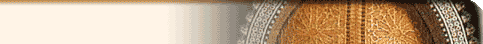
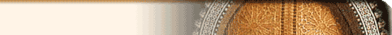

Savior.org's mission is that of increasing awareness
and devotion to our Lord in the Most Blessed Sacrament.
We also seek to bring the live image of His living Presence
to the homebound, the workplace, and to remote areas around
the world.
You must have JavaScript enabled on your browser to be able to view the live image. |
 
